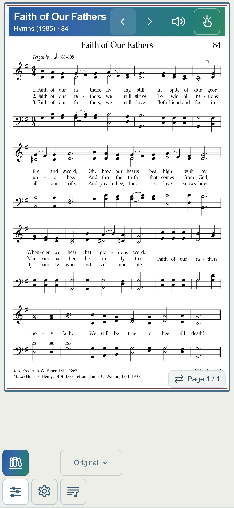
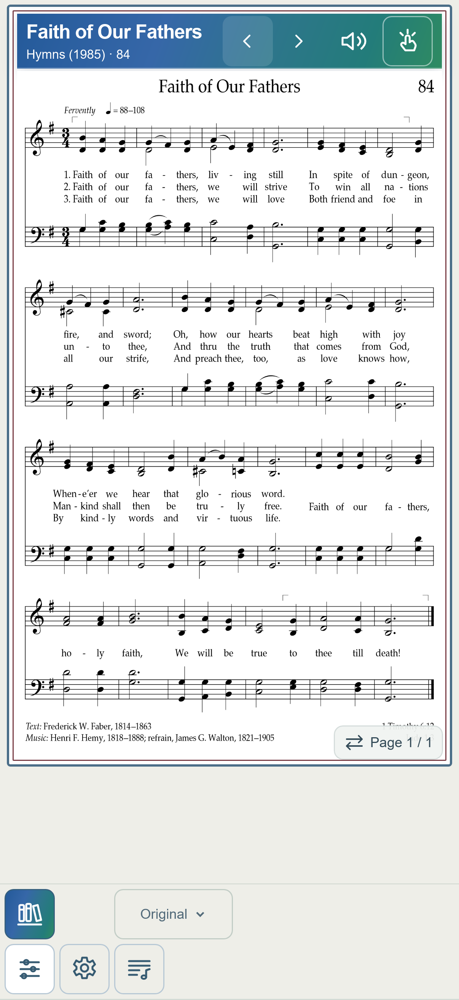
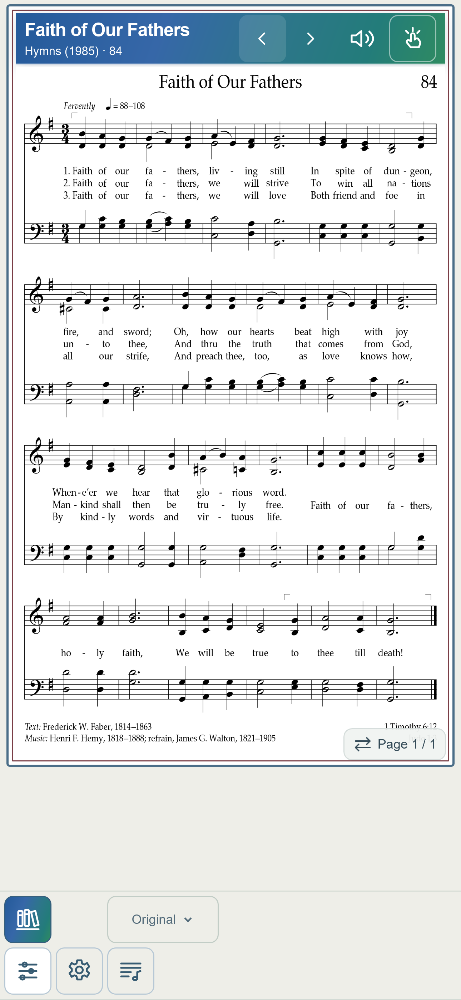
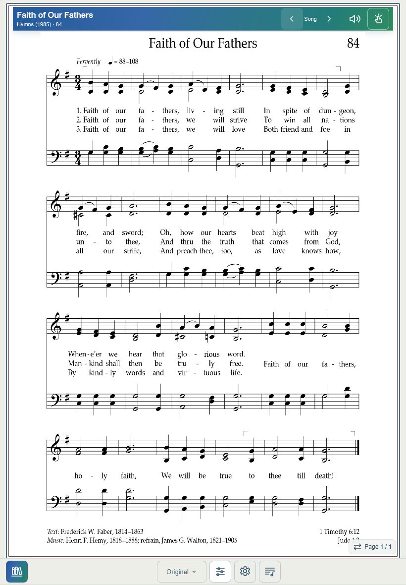
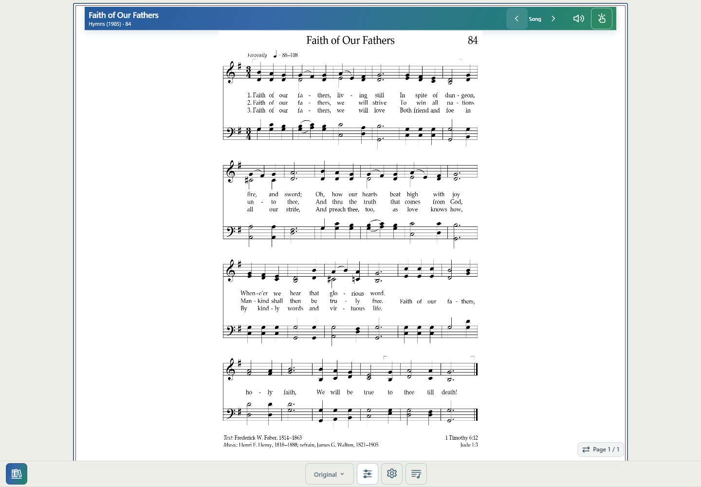

Baseline 973709a, including footer correction 9ae1b6b. Neither reported physical failure reproduced in 220 combined geometry/navigation snapshots. No shared or independent root cause can yet be established. No CSS, footer-positioning, pagination, or navigation decision logic changed.
Added URL-gated report v4: captured song set and playable neighbors; busy/loading and last navigation-sync state; actual footer/toolbar/button bounds, grid geometry, viewport and safe-area values, hit targets and visibility; render count. An unsettled state remains copyable after 20 seconds.
Real UI origins: Hymns, All Music, Search, Favorites, saved List (source menu and workspace), Files (source menu and Files page). Search clearing preserved captured IDs. Lyrics return preserved the List. #85 ↔ #87 correctly skips visible unavailable #86. Desktop neighbor sequence and phone sequences passed. Original intentionally hides Key/Reset; #201 has no Lyrics control. No structured-only built-in catalog case exists.
WebKit phone widths 390/402/430 and tablet 820; Chromium desktop 1440. Full and reduced visual viewports, offsetTop 20, simulated safe clearance 34, five repeated #223 transition cycles. No stale budget, unexpected disabled state, footer overflow, or idle render loop detected. Emulation does not reproduce physical Safari chrome or constitute physical acceptance. Source assets, harmony, navigation defaults and score layout rules remain unchanged.
Focused commands: node tests/release-blockers.mjs; node tests/release-origins-diagnostics.mjs; node tests/release-desktop-neighbors.mjs; node --check for changed JavaScript; git diff --check.
Files: app.js, library.js, layout-debug.js, new layout-state.js, sw.js (v217), three focused tests, this HTML/JSON report and representative screenshots.





Full-precision records: JSON. Index is zero-based; rendering counts are cumulative within the page session.
| State | Viewport | Footer top–bottom | Controls | Set/index | Previous / Next | Budget | Pages | Renders |
|---|---|---|---|---|---|---|---|---|
| 390-30-open | 390 × 844; visual 844 + 0 | 742.0–844.0 | 5 | 335/28 | Enabled / Enabled | 648.0 | 0 | 0 |
| 390-30-full-auto | 390 × 844; visual 844 + 0 | 742.0–844.0 | 7 | 335/28 | Enabled / Enabled | 631.0 | 3 | 1 |
| 390-30-full-large | 390 × 844; visual 844 + 0 | 742.0–844.0 | 7 | 335/28 | Enabled / Enabled | 631.0 | 2 | 2 |
| 390-30-full-auto | 390 × 844; visual 844 + 0 | 742.0–844.0 | 7 | 335/28 | Enabled / Enabled | 631.0 | 3 | 3 |
| 390-30-full-pdf | 390 × 844; visual 844 + 0 | 742.0–844.0 | 5 | 335/28 | Enabled / Enabled | 648.0 | 0 | 3 |
| 390-30-reduced-auto | 390 × 844; visual 650 + 0 | 548.0–650.0 | 7 | 335/28 | Enabled / Enabled | 437.0 | 4 | 4 |
| 390-30-reduced-large | 390 × 844; visual 650 + 0 | 548.0–650.0 | 7 | 335/28 | Enabled / Enabled | 437.0 | 3 | 5 |
| 390-30-reduced-pdf | 390 × 844; visual 650 + 0 | 548.0–650.0 | 5 | 335/28 | Enabled / Enabled | 454.0 | 0 | 5 |
| 390-201-open | 390 × 844; visual 844 + 0 | 742.0–844.0 | 4 | 335/196 | Enabled / Enabled | 648.0 | 0 | 5 |
| 390-201-full-auto | 390 × 844; visual 844 + 0 | 742.0–844.0 | 6 | 335/196 | Enabled / Enabled | 631.0 | 3 | 6 |
| 390-201-full-large | 390 × 844; visual 844 + 0 | 742.0–844.0 | 6 | 335/196 | Enabled / Enabled | 631.0 | 2 | 7 |
| 390-201-full-auto | 390 × 844; visual 844 + 0 | 742.0–844.0 | 6 | 335/196 | Enabled / Enabled | 631.0 | 3 | 8 |
| 390-201-full-pdf | 390 × 844; visual 844 + 0 | 742.0–844.0 | 4 | 335/196 | Enabled / Enabled | 648.0 | 0 | 8 |
| 390-201-reduced-auto | 390 × 844; visual 650 + 0 | 548.0–650.0 | 6 | 335/196 | Enabled / Enabled | 437.0 | 3 | 9 |
| 390-201-reduced-large | 390 × 844; visual 650 + 0 | 548.0–650.0 | 6 | 335/196 | Enabled / Enabled | 437.0 | 3 | 10 |
| 390-201-reduced-pdf | 390 × 844; visual 650 + 0 | 548.0–650.0 | 4 | 335/196 | Enabled / Enabled | 454.0 | 0 | 10 |
| 390-223-open | 390 × 844; visual 844 + 0 | 742.0–844.0 | 5 | 335/217 | Enabled / Enabled | 648.0 | 0 | 10 |
| 390-223-full-auto | 390 × 844; visual 844 + 0 | 742.0–844.0 | 7 | 335/217 | Enabled / Enabled | 631.0 | 4 | 11 |
| 390-223-full-large | 390 × 844; visual 844 + 0 | 742.0–844.0 | 7 | 335/217 | Enabled / Enabled | 631.0 | 2 | 12 |
| 390-223-full-auto | 390 × 844; visual 844 + 0 | 742.0–844.0 | 7 | 335/217 | Enabled / Enabled | 631.0 | 4 | 13 |
| 390-223-full-pdf | 390 × 844; visual 844 + 0 | 742.0–844.0 | 5 | 335/217 | Enabled / Enabled | 648.0 | 0 | 13 |
| 390-223-reduced-auto | 390 × 844; visual 650 + 0 | 548.0–650.0 | 7 | 335/217 | Enabled / Enabled | 437.0 | 6 | 14 |
| 390-223-reduced-large | 390 × 844; visual 650 + 0 | 548.0–650.0 | 7 | 335/217 | Enabled / Enabled | 437.0 | 3 | 15 |
| 390-223-reduced-pdf | 390 × 844; visual 650 + 0 | 548.0–650.0 | 5 | 335/217 | Enabled / Enabled | 454.0 | 0 | 15 |
| 390-neighbors-start | 390 × 844; visual 844 + 0 | 742.0–844.0 | 5 | 335/81 | Enabled / Enabled | 648.0 | 0 | 15 |
| 390-to85 | 390 × 844; visual 844 + 0 | 742.0–844.0 | 5 | 335/82 | Enabled / Enabled | 648.0 | 0 | 15 |
| 390-to87 | 390 × 844; visual 844 + 0 | 742.0–844.0 | 5 | 335/83 | Enabled / Enabled | 648.0 | 0 | 15 |
| 390-to88 | 390 × 844; visual 844 + 0 | 742.0–844.0 | 5 | 335/84 | Enabled / Enabled | 648.0 | 0 | 15 |
| 390-to87 | 390 × 844; visual 844 + 0 | 742.0–844.0 | 5 | 335/83 | Enabled / Enabled | 648.0 | 0 | 15 |
| 390-to85 | 390 × 844; visual 844 + 0 | 742.0–844.0 | 5 | 335/82 | Enabled / Enabled | 648.0 | 0 | 15 |
| 390-to84 | 390 × 844; visual 844 + 0 | 742.0–844.0 | 5 | 335/81 | Enabled / Enabled | 648.0 | 0 | 15 |
| 402-84-open | 402 × 874; visual 874 + 0 | 772.0–874.0 | 5 | 335/81 | Enabled / Enabled | 678.0 | 0 | 0 |
| 402-84-full-auto | 402 × 874; visual 874 + 0 | 772.0–874.0 | 7 | 335/81 | Enabled / Enabled | 661.0 | 2 | 1 |
| 402-84-full-large | 402 × 874; visual 874 + 0 | 772.0–874.0 | 7 | 335/81 | Enabled / Enabled | 661.0 | 1 | 2 |
| 402-84-full-auto | 402 × 874; visual 874 + 0 | 772.0–874.0 | 7 | 335/81 | Enabled / Enabled | 661.0 | 2 | 3 |
| 402-84-full-pdf | 402 × 874; visual 874 + 0 | 772.0–874.0 | 5 | 335/81 | Enabled / Enabled | 678.0 | 0 | 3 |
| 402-84-reduced-auto | 402 × 874; visual 650 + 0 | 548.0–650.0 | 7 | 335/81 | Enabled / Enabled | 437.0 | 3 | 4 |
| 402-84-reduced-large | 402 × 874; visual 650 + 0 | 548.0–650.0 | 7 | 335/81 | Enabled / Enabled | 437.0 | 2 | 5 |
| 402-84-reduced-pdf | 402 × 874; visual 650 + 0 | 548.0–650.0 | 5 | 335/81 | Enabled / Enabled | 454.0 | 0 | 5 |
| 402-85-open | 402 × 874; visual 874 + 0 | 772.0–874.0 | 5 | 335/82 | Enabled / Enabled | 678.0 | 0 | 5 |
| 402-85-full-auto | 402 × 874; visual 874 + 0 | 772.0–874.0 | 7 | 335/82 | Enabled / Enabled | 661.0 | 2 | 6 |
| 402-85-full-large | 402 × 874; visual 874 + 0 | 772.0–874.0 | 7 | 335/82 | Enabled / Enabled | 661.0 | 2 | 7 |
| 402-85-full-auto | 402 × 874; visual 874 + 0 | 772.0–874.0 | 7 | 335/82 | Enabled / Enabled | 661.0 | 2 | 8 |
| 402-85-full-pdf | 402 × 874; visual 874 + 0 | 772.0–874.0 | 5 | 335/82 | Enabled / Enabled | 678.0 | 0 | 8 |
| 402-85-reduced-auto | 402 × 874; visual 650 + 0 | 548.0–650.0 | 7 | 335/82 | Enabled / Enabled | 437.0 | 3 | 9 |
| 402-85-reduced-large | 402 × 874; visual 650 + 0 | 548.0–650.0 | 7 | 335/82 | Enabled / Enabled | 437.0 | 2 | 10 |
| 402-85-reduced-pdf | 402 × 874; visual 650 + 0 | 548.0–650.0 | 5 | 335/82 | Enabled / Enabled | 454.0 | 0 | 10 |
| 402-87-open | 402 × 874; visual 874 + 0 | 772.0–874.0 | 5 | 335/83 | Enabled / Enabled | 678.0 | 0 | 10 |
| 402-87-full-auto | 402 × 874; visual 874 + 0 | 772.0–874.0 | 7 | 335/83 | Enabled / Enabled | 661.0 | 2 | 11 |
| 402-87-full-large | 402 × 874; visual 874 + 0 | 772.0–874.0 | 7 | 335/83 | Enabled / Enabled | 661.0 | 1 | 12 |
| 402-87-full-auto | 402 × 874; visual 874 + 0 | 772.0–874.0 | 7 | 335/83 | Enabled / Enabled | 661.0 | 2 | 13 |
| 402-87-full-pdf | 402 × 874; visual 874 + 0 | 772.0–874.0 | 5 | 335/83 | Enabled / Enabled | 678.0 | 0 | 13 |
| 402-87-reduced-auto | 402 × 874; visual 650 + 0 | 548.0–650.0 | 7 | 335/83 | Enabled / Enabled | 437.0 | 3 | 14 |
| 402-87-reduced-large | 402 × 874; visual 650 + 0 | 548.0–650.0 | 7 | 335/83 | Enabled / Enabled | 437.0 | 2 | 15 |
| 402-87-reduced-pdf | 402 × 874; visual 650 + 0 | 548.0–650.0 | 5 | 335/83 | Enabled / Enabled | 454.0 | 0 | 15 |
| 402-88-open | 402 × 874; visual 874 + 0 | 772.0–874.0 | 5 | 335/84 | Enabled / Enabled | 678.0 | 0 | 15 |
| 402-88-full-auto | 402 × 874; visual 874 + 0 | 772.0–874.0 | 7 | 335/84 | Enabled / Enabled | 661.0 | 2 | 16 |
| 402-88-full-large | 402 × 874; visual 874 + 0 | 772.0–874.0 | 7 | 335/84 | Enabled / Enabled | 661.0 | 1 | 17 |
| 402-88-full-auto | 402 × 874; visual 874 + 0 | 772.0–874.0 | 7 | 335/84 | Enabled / Enabled | 661.0 | 2 | 18 |
| 402-88-full-pdf | 402 × 874; visual 874 + 0 | 772.0–874.0 | 5 | 335/84 | Enabled / Enabled | 678.0 | 0 | 18 |
| 402-88-reduced-auto | 402 × 874; visual 650 + 0 | 548.0–650.0 | 7 | 335/84 | Enabled / Enabled | 437.0 | 2 | 19 |
| 402-88-reduced-large | 402 × 874; visual 650 + 0 | 548.0–650.0 | 7 | 335/84 | Enabled / Enabled | 437.0 | 2 | 20 |
| 402-88-reduced-pdf | 402 × 874; visual 650 + 0 | 548.0–650.0 | 5 | 335/84 | Enabled / Enabled | 454.0 | 0 | 20 |
| 402-30-open | 402 × 874; visual 874 + 0 | 772.0–874.0 | 5 | 335/28 | Enabled / Enabled | 678.0 | 0 | 20 |
| 402-30-full-auto | 402 × 874; visual 874 + 0 | 772.0–874.0 | 7 | 335/28 | Enabled / Enabled | 661.0 | 3 | 21 |
| 402-30-full-large | 402 × 874; visual 874 + 0 | 772.0–874.0 | 7 | 335/28 | Enabled / Enabled | 661.0 | 2 | 22 |
| 402-30-full-auto | 402 × 874; visual 874 + 0 | 772.0–874.0 | 7 | 335/28 | Enabled / Enabled | 661.0 | 3 | 23 |
| 402-30-full-pdf | 402 × 874; visual 874 + 0 | 772.0–874.0 | 5 | 335/28 | Enabled / Enabled | 678.0 | 0 | 23 |
| 402-30-reduced-auto | 402 × 874; visual 650 + 0 | 548.0–650.0 | 7 | 335/28 | Enabled / Enabled | 437.0 | 4 | 24 |
| 402-30-reduced-large | 402 × 874; visual 650 + 0 | 548.0–650.0 | 7 | 335/28 | Enabled / Enabled | 437.0 | 3 | 25 |
| 402-30-reduced-pdf | 402 × 874; visual 650 + 0 | 548.0–650.0 | 5 | 335/28 | Enabled / Enabled | 454.0 | 0 | 25 |
| 402-201-open | 402 × 874; visual 874 + 0 | 772.0–874.0 | 4 | 335/196 | Enabled / Enabled | 678.0 | 0 | 25 |
| 402-201-full-auto | 402 × 874; visual 874 + 0 | 772.0–874.0 | 6 | 335/196 | Enabled / Enabled | 661.0 | 2 | 26 |
| 402-201-full-large | 402 × 874; visual 874 + 0 | 772.0–874.0 | 6 | 335/196 | Enabled / Enabled | 661.0 | 2 | 27 |
| 402-201-full-auto | 402 × 874; visual 874 + 0 | 772.0–874.0 | 6 | 335/196 | Enabled / Enabled | 661.0 | 2 | 28 |
| 402-201-full-pdf | 402 × 874; visual 874 + 0 | 772.0–874.0 | 4 | 335/196 | Enabled / Enabled | 678.0 | 0 | 28 |
| 402-201-reduced-auto | 402 × 874; visual 650 + 0 | 548.0–650.0 | 6 | 335/196 | Enabled / Enabled | 437.0 | 3 | 29 |
| 402-201-reduced-large | 402 × 874; visual 650 + 0 | 548.0–650.0 | 6 | 335/196 | Enabled / Enabled | 437.0 | 3 | 30 |
| 402-201-reduced-pdf | 402 × 874; visual 650 + 0 | 548.0–650.0 | 4 | 335/196 | Enabled / Enabled | 454.0 | 0 | 30 |
| 402-223-open | 402 × 874; visual 874 + 0 | 772.0–874.0 | 5 | 335/217 | Enabled / Enabled | 678.0 | 0 | 30 |
| 402-223-full-auto | 402 × 874; visual 874 + 0 | 772.0–874.0 | 7 | 335/217 | Enabled / Enabled | 661.0 | 4 | 31 |
| 402-223-full-large | 402 × 874; visual 874 + 0 | 772.0–874.0 | 7 | 335/217 | Enabled / Enabled | 661.0 | 2 | 32 |
| 402-223-full-auto | 402 × 874; visual 874 + 0 | 772.0–874.0 | 7 | 335/217 | Enabled / Enabled | 661.0 | 4 | 33 |
| 402-223-full-pdf | 402 × 874; visual 874 + 0 | 772.0–874.0 | 5 | 335/217 | Enabled / Enabled | 678.0 | 0 | 33 |
| 402-cycle1-auto | 402 × 874; visual 650 + 0 | 548.0–650.0 | 7 | 335/217 | Enabled / Enabled | 437.0 | 7 | 34 |
| 402-cycle1-large | 402 × 874; visual 650 + 0 | 548.0–650.0 | 7 | 335/217 | Enabled / Enabled | 437.0 | 3 | 35 |
| 402-cycle1-pdf | 402 × 874; visual 650 + 0 | 548.0–650.0 | 5 | 335/217 | Enabled / Enabled | 454.0 | 0 | 35 |
| 402-cycle1-auto | 402 × 874; visual 650 + 0 | 548.0–650.0 | 7 | 335/217 | Enabled / Enabled | 437.0 | 7 | 36 |
| 402-cycle1-large | 402 × 874; visual 650 + 0 | 548.0–650.0 | 7 | 335/217 | Enabled / Enabled | 437.0 | 3 | 37 |
| 402-cycle1-auto | 402 × 874; visual 650 + 0 | 548.0–650.0 | 7 | 335/217 | Enabled / Enabled | 437.0 | 7 | 38 |
| 402-cycle2-auto | 402 × 874; visual 650 + 0 | 548.0–650.0 | 7 | 335/217 | Enabled / Enabled | 437.0 | 7 | 39 |
| 402-cycle2-large | 402 × 874; visual 650 + 0 | 548.0–650.0 | 7 | 335/217 | Enabled / Enabled | 437.0 | 3 | 40 |
| 402-cycle2-pdf | 402 × 874; visual 650 + 0 | 548.0–650.0 | 5 | 335/217 | Enabled / Enabled | 454.0 | 0 | 40 |
| 402-cycle2-auto | 402 × 874; visual 650 + 0 | 548.0–650.0 | 7 | 335/217 | Enabled / Enabled | 437.0 | 7 | 41 |
| 402-cycle2-large | 402 × 874; visual 650 + 0 | 548.0–650.0 | 7 | 335/217 | Enabled / Enabled | 437.0 | 3 | 42 |
| 402-cycle2-auto | 402 × 874; visual 650 + 0 | 548.0–650.0 | 7 | 335/217 | Enabled / Enabled | 437.0 | 7 | 43 |
| 402-cycle3-auto | 402 × 874; visual 650 + 0 | 548.0–650.0 | 7 | 335/217 | Enabled / Enabled | 437.0 | 7 | 44 |
| 402-cycle3-large | 402 × 874; visual 650 + 0 | 548.0–650.0 | 7 | 335/217 | Enabled / Enabled | 437.0 | 3 | 45 |
| 402-cycle3-pdf | 402 × 874; visual 650 + 0 | 548.0–650.0 | 5 | 335/217 | Enabled / Enabled | 454.0 | 0 | 45 |
| 402-cycle3-auto | 402 × 874; visual 650 + 0 | 548.0–650.0 | 7 | 335/217 | Enabled / Enabled | 437.0 | 7 | 46 |
| 402-cycle3-large | 402 × 874; visual 650 + 0 | 548.0–650.0 | 7 | 335/217 | Enabled / Enabled | 437.0 | 3 | 47 |
| 402-cycle3-auto | 402 × 874; visual 650 + 0 | 548.0–650.0 | 7 | 335/217 | Enabled / Enabled | 437.0 | 7 | 48 |
| 402-cycle4-auto | 402 × 874; visual 650 + 0 | 548.0–650.0 | 7 | 335/217 | Enabled / Enabled | 437.0 | 7 | 49 |
| 402-cycle4-large | 402 × 874; visual 650 + 0 | 548.0–650.0 | 7 | 335/217 | Enabled / Enabled | 437.0 | 3 | 50 |
| 402-cycle4-pdf | 402 × 874; visual 650 + 0 | 548.0–650.0 | 5 | 335/217 | Enabled / Enabled | 454.0 | 0 | 50 |
| 402-cycle4-auto | 402 × 874; visual 650 + 0 | 548.0–650.0 | 7 | 335/217 | Enabled / Enabled | 437.0 | 7 | 51 |
| 402-cycle4-large | 402 × 874; visual 650 + 0 | 548.0–650.0 | 7 | 335/217 | Enabled / Enabled | 437.0 | 3 | 52 |
| 402-cycle4-auto | 402 × 874; visual 650 + 0 | 548.0–650.0 | 7 | 335/217 | Enabled / Enabled | 437.0 | 7 | 53 |
| 402-cycle5-auto | 402 × 874; visual 650 + 0 | 548.0–650.0 | 7 | 335/217 | Enabled / Enabled | 437.0 | 7 | 54 |
| 402-cycle5-large | 402 × 874; visual 650 + 0 | 548.0–650.0 | 7 | 335/217 | Enabled / Enabled | 437.0 | 3 | 55 |
| 402-cycle5-pdf | 402 × 874; visual 650 + 0 | 548.0–650.0 | 5 | 335/217 | Enabled / Enabled | 454.0 | 0 | 55 |
| 402-cycle5-auto | 402 × 874; visual 650 + 0 | 548.0–650.0 | 7 | 335/217 | Enabled / Enabled | 437.0 | 7 | 56 |
| 402-cycle5-large | 402 × 874; visual 650 + 0 | 548.0–650.0 | 7 | 335/217 | Enabled / Enabled | 437.0 | 3 | 57 |
| 402-cycle5-auto | 402 × 874; visual 650 + 0 | 548.0–650.0 | 7 | 335/217 | Enabled / Enabled | 437.0 | 7 | 58 |
| 402-offset20 | 402 × 874; visual 630 + 20 | 548.0–650.0 | 7 | 335/217 | Enabled / Enabled | 437.0 | 7 | 58 |
| 402-safe34 | 402 × 874; visual 630 + 20 | 514.0–650.0 | 7 | 335/217 | Enabled / Enabled | 403.0 | 8 | 59 |
| 402-223-reduced-auto | 402 × 874; visual 650 + 0 | 548.0–650.0 | 7 | 335/217 | Enabled / Enabled | 437.0 | 7 | 62 |
| 402-223-reduced-large | 402 × 874; visual 650 + 0 | 548.0–650.0 | 7 | 335/217 | Enabled / Enabled | 437.0 | 3 | 63 |
| 402-223-reduced-pdf | 402 × 874; visual 650 + 0 | 548.0–650.0 | 5 | 335/217 | Enabled / Enabled | 454.0 | 0 | 63 |
| 402-neighbors-start | 402 × 874; visual 874 + 0 | 772.0–874.0 | 5 | 335/81 | Enabled / Enabled | 678.0 | 0 | 63 |
| 402-to85 | 402 × 874; visual 874 + 0 | 772.0–874.0 | 5 | 335/82 | Enabled / Enabled | 678.0 | 0 | 63 |
| 402-to87 | 402 × 874; visual 874 + 0 | 772.0–874.0 | 5 | 335/83 | Enabled / Enabled | 678.0 | 0 | 63 |
| 402-to88 | 402 × 874; visual 874 + 0 | 772.0–874.0 | 5 | 335/84 | Enabled / Enabled | 678.0 | 0 | 63 |
| 402-to87 | 402 × 874; visual 874 + 0 | 772.0–874.0 | 5 | 335/83 | Enabled / Enabled | 678.0 | 0 | 63 |
| 402-to85 | 402 × 874; visual 874 + 0 | 772.0–874.0 | 5 | 335/82 | Enabled / Enabled | 678.0 | 0 | 63 |
| 402-to84 | 402 × 874; visual 874 + 0 | 772.0–874.0 | 5 | 335/81 | Enabled / Enabled | 678.0 | 0 | 63 |
| 430-30-open | 430 × 932; visual 932 + 0 | 830.0–932.0 | 5 | 335/28 | Enabled / Enabled | 736.0 | 0 | 0 |
| 430-30-full-auto | 430 × 932; visual 932 + 0 | 830.0–932.0 | 7 | 335/28 | Enabled / Enabled | 719.0 | 3 | 1 |
| 430-30-full-large | 430 × 932; visual 932 + 0 | 830.0–932.0 | 7 | 335/28 | Enabled / Enabled | 719.0 | 2 | 2 |
| 430-30-full-auto | 430 × 932; visual 932 + 0 | 830.0–932.0 | 7 | 335/28 | Enabled / Enabled | 719.0 | 3 | 3 |
| 430-30-full-pdf | 430 × 932; visual 932 + 0 | 830.0–932.0 | 5 | 335/28 | Enabled / Enabled | 736.0 | 0 | 3 |
| 430-30-reduced-auto | 430 × 932; visual 650 + 0 | 548.0–650.0 | 7 | 335/28 | Enabled / Enabled | 437.0 | 4 | 4 |
| 430-30-reduced-large | 430 × 932; visual 650 + 0 | 548.0–650.0 | 7 | 335/28 | Enabled / Enabled | 437.0 | 3 | 5 |
| 430-30-reduced-pdf | 430 × 932; visual 650 + 0 | 548.0–650.0 | 5 | 335/28 | Enabled / Enabled | 454.0 | 0 | 5 |
| 430-201-open | 430 × 932; visual 932 + 0 | 830.0–932.0 | 4 | 335/196 | Enabled / Enabled | 736.0 | 0 | 5 |
| 430-201-full-auto | 430 × 932; visual 932 + 0 | 830.0–932.0 | 6 | 335/196 | Enabled / Enabled | 719.0 | 2 | 6 |
| 430-201-full-large | 430 × 932; visual 932 + 0 | 830.0–932.0 | 6 | 335/196 | Enabled / Enabled | 719.0 | 2 | 7 |
| 430-201-full-auto | 430 × 932; visual 932 + 0 | 830.0–932.0 | 6 | 335/196 | Enabled / Enabled | 719.0 | 2 | 8 |
| 430-201-full-pdf | 430 × 932; visual 932 + 0 | 830.0–932.0 | 4 | 335/196 | Enabled / Enabled | 736.0 | 0 | 8 |
| 430-201-reduced-auto | 430 × 932; visual 650 + 0 | 548.0–650.0 | 6 | 335/196 | Enabled / Enabled | 437.0 | 3 | 9 |
| 430-201-reduced-large | 430 × 932; visual 650 + 0 | 548.0–650.0 | 6 | 335/196 | Enabled / Enabled | 437.0 | 3 | 10 |
| 430-201-reduced-pdf | 430 × 932; visual 650 + 0 | 548.0–650.0 | 4 | 335/196 | Enabled / Enabled | 454.0 | 0 | 10 |
| 430-223-open | 430 × 932; visual 932 + 0 | 830.0–932.0 | 5 | 335/217 | Enabled / Enabled | 736.0 | 0 | 10 |
| 430-223-full-auto | 430 × 932; visual 932 + 0 | 830.0–932.0 | 7 | 335/217 | Enabled / Enabled | 719.0 | 3 | 11 |
| 430-223-full-large | 430 × 932; visual 932 + 0 | 830.0–932.0 | 7 | 335/217 | Enabled / Enabled | 719.0 | 2 | 12 |
| 430-223-full-auto | 430 × 932; visual 932 + 0 | 830.0–932.0 | 7 | 335/217 | Enabled / Enabled | 719.0 | 3 | 13 |
| 430-223-full-pdf | 430 × 932; visual 932 + 0 | 830.0–932.0 | 5 | 335/217 | Enabled / Enabled | 736.0 | 0 | 13 |
| 430-223-reduced-auto | 430 × 932; visual 650 + 0 | 548.0–650.0 | 7 | 335/217 | Enabled / Enabled | 437.0 | 6 | 14 |
| 430-223-reduced-large | 430 × 932; visual 650 + 0 | 548.0–650.0 | 7 | 335/217 | Enabled / Enabled | 437.0 | 4 | 15 |
| 430-223-reduced-pdf | 430 × 932; visual 650 + 0 | 548.0–650.0 | 5 | 335/217 | Enabled / Enabled | 454.0 | 0 | 15 |
| 430-neighbors-start | 430 × 932; visual 932 + 0 | 830.0–932.0 | 5 | 335/81 | Enabled / Enabled | 736.0 | 0 | 15 |
| 430-to85 | 430 × 932; visual 932 + 0 | 830.0–932.0 | 5 | 335/82 | Enabled / Enabled | 736.0 | 0 | 15 |
| 430-to87 | 430 × 932; visual 932 + 0 | 830.0–932.0 | 5 | 335/83 | Enabled / Enabled | 736.0 | 0 | 15 |
| 430-to88 | 430 × 932; visual 932 + 0 | 830.0–932.0 | 5 | 335/84 | Enabled / Enabled | 736.0 | 0 | 15 |
| 430-to87 | 430 × 932; visual 932 + 0 | 830.0–932.0 | 5 | 335/83 | Enabled / Enabled | 736.0 | 0 | 15 |
| 430-to85 | 430 × 932; visual 932 + 0 | 830.0–932.0 | 5 | 335/82 | Enabled / Enabled | 736.0 | 0 | 15 |
| 430-to84 | 430 × 932; visual 932 + 0 | 830.0–932.0 | 5 | 335/81 | Enabled / Enabled | 736.0 | 0 | 15 |
| 820-30-open | 820 × 1180; visual 1180 + 0 | 1126.0–1180.0 | 5 | 335/28 | Enabled / Enabled | 1030.0 | 0 | 0 |
| 820-30-full-auto | 820 × 1180; visual 1180 + 0 | 1126.0–1180.0 | 7 | 335/28 | Enabled / Enabled | 1011.7 | 1 | 1 |
| 820-30-full-large | 820 × 1180; visual 1180 + 0 | 1126.0–1180.0 | 7 | 335/28 | Enabled / Enabled | 1011.7 | 2 | 2 |
| 820-30-full-auto | 820 × 1180; visual 1180 + 0 | 1126.0–1180.0 | 7 | 335/28 | Enabled / Enabled | 1011.7 | 1 | 3 |
| 820-30-full-pdf | 820 × 1180; visual 1180 + 0 | 1126.0–1180.0 | 5 | 335/28 | Enabled / Enabled | 1030.0 | 0 | 3 |
| 820-201-open | 820 × 1180; visual 1180 + 0 | 1126.0–1180.0 | 4 | 335/196 | Enabled / Enabled | 1030.0 | 0 | 3 |
| 820-201-full-auto | 820 × 1180; visual 1180 + 0 | 1126.0–1180.0 | 6 | 335/196 | Enabled / Enabled | 1011.7 | 1 | 4 |
| 820-201-full-large | 820 × 1180; visual 1180 + 0 | 1126.0–1180.0 | 6 | 335/196 | Enabled / Enabled | 1011.7 | 2 | 5 |
| 820-201-full-auto | 820 × 1180; visual 1180 + 0 | 1126.0–1180.0 | 6 | 335/196 | Enabled / Enabled | 1011.7 | 1 | 6 |
| 820-201-full-pdf | 820 × 1180; visual 1180 + 0 | 1126.0–1180.0 | 4 | 335/196 | Enabled / Enabled | 1030.0 | 0 | 6 |
| 820-223-open | 820 × 1180; visual 1180 + 0 | 1126.0–1180.0 | 5 | 335/217 | Enabled / Enabled | 1030.0 | 0 | 6 |
| 820-223-full-auto | 820 × 1180; visual 1180 + 0 | 1126.0–1180.0 | 7 | 335/217 | Enabled / Enabled | 1011.7 | 2 | 7 |
| 820-223-full-large | 820 × 1180; visual 1180 + 0 | 1126.0–1180.0 | 7 | 335/217 | Enabled / Enabled | 1011.7 | 2 | 8 |
| 820-223-full-auto | 820 × 1180; visual 1180 + 0 | 1126.0–1180.0 | 7 | 335/217 | Enabled / Enabled | 1011.7 | 2 | 9 |
| 820-223-full-pdf | 820 × 1180; visual 1180 + 0 | 1126.0–1180.0 | 5 | 335/217 | Enabled / Enabled | 1030.0 | 0 | 9 |
| 820-neighbors-start | 820 × 1180; visual 1180 + 0 | 1126.0–1180.0 | 5 | 335/81 | Enabled / Enabled | 1030.0 | 0 | 9 |
| 820-to85 | 820 × 1180; visual 1180 + 0 | 1126.0–1180.0 | 5 | 335/82 | Enabled / Enabled | 1030.0 | 0 | 9 |
| 820-to87 | 820 × 1180; visual 1180 + 0 | 1126.0–1180.0 | 5 | 335/83 | Enabled / Enabled | 1030.0 | 0 | 9 |
| 820-to88 | 820 × 1180; visual 1180 + 0 | 1126.0–1180.0 | 5 | 335/84 | Enabled / Enabled | 1030.0 | 0 | 9 |
| 820-to87 | 820 × 1180; visual 1180 + 0 | 1126.0–1180.0 | 5 | 335/83 | Enabled / Enabled | 1030.0 | 0 | 9 |
| 820-to85 | 820 × 1180; visual 1180 + 0 | 1126.0–1180.0 | 5 | 335/82 | Enabled / Enabled | 1030.0 | 0 | 9 |
| 820-to84 | 820 × 1180; visual 1180 + 0 | 1126.0–1180.0 | 5 | 335/81 | Enabled / Enabled | 1030.0 | 0 | 9 |
| desktop-84 | 1440 × 1000; visual 1000 + 0 | 946.0–1000.0 | 5 | 335/81 | Enabled / Enabled | 850.0 | 0 | 0 |
| desktop-84-auto | 1440 × 1000; visual 1000 + 0 | 946.0–1000.0 | 7 | 335/81 | Enabled / Enabled | 831.7 | 1 | 1 |
| desktop-84-large | 1440 × 1000; visual 1000 + 0 | 946.0–1000.0 | 7 | 335/81 | Enabled / Enabled | 831.7 | 1 | 2 |
| desktop-84-auto | 1440 × 1000; visual 1000 + 0 | 946.0–1000.0 | 7 | 335/81 | Enabled / Enabled | 831.7 | 1 | 3 |
| desktop-84-pdf | 1440 × 1000; visual 1000 + 0 | 946.0–1000.0 | 5 | 335/81 | Enabled / Enabled | 850.0 | 0 | 3 |
| desktop-85 | 1440 × 1000; visual 1000 + 0 | 946.0–1000.0 | 5 | 335/82 | Enabled / Enabled | 850.0 | 0 | 3 |
| desktop-85-auto | 1440 × 1000; visual 1000 + 0 | 946.0–1000.0 | 7 | 335/82 | Enabled / Enabled | 831.7 | 2 | 4 |
| desktop-85-large | 1440 × 1000; visual 1000 + 0 | 946.0–1000.0 | 7 | 335/82 | Enabled / Enabled | 831.7 | 2 | 5 |
| desktop-85-auto | 1440 × 1000; visual 1000 + 0 | 946.0–1000.0 | 7 | 335/82 | Enabled / Enabled | 831.7 | 1 | 6 |
| desktop-85-pdf | 1440 × 1000; visual 1000 + 0 | 946.0–1000.0 | 5 | 335/82 | Enabled / Enabled | 850.0 | 0 | 6 |
| desktop-87 | 1440 × 1000; visual 1000 + 0 | 946.0–1000.0 | 5 | 335/83 | Enabled / Enabled | 850.0 | 0 | 6 |
| desktop-87-auto | 1440 × 1000; visual 1000 + 0 | 946.0–1000.0 | 7 | 335/83 | Enabled / Enabled | 831.7 | 1 | 7 |
| desktop-87-large | 1440 × 1000; visual 1000 + 0 | 946.0–1000.0 | 7 | 335/83 | Enabled / Enabled | 831.7 | 1 | 8 |
| desktop-87-auto | 1440 × 1000; visual 1000 + 0 | 946.0–1000.0 | 7 | 335/83 | Enabled / Enabled | 831.7 | 1 | 9 |
| desktop-87-pdf | 1440 × 1000; visual 1000 + 0 | 946.0–1000.0 | 5 | 335/83 | Enabled / Enabled | 850.0 | 0 | 9 |
| desktop-88 | 1440 × 1000; visual 1000 + 0 | 946.0–1000.0 | 5 | 335/84 | Enabled / Enabled | 850.0 | 0 | 9 |
| desktop-88-auto | 1440 × 1000; visual 1000 + 0 | 946.0–1000.0 | 7 | 335/84 | Enabled / Enabled | 831.7 | 1 | 10 |
| desktop-88-large | 1440 × 1000; visual 1000 + 0 | 946.0–1000.0 | 7 | 335/84 | Enabled / Enabled | 831.7 | 1 | 11 |
| desktop-88-auto | 1440 × 1000; visual 1000 + 0 | 946.0–1000.0 | 7 | 335/84 | Enabled / Enabled | 831.7 | 1 | 12 |
| desktop-88-pdf | 1440 × 1000; visual 1000 + 0 | 946.0–1000.0 | 5 | 335/84 | Enabled / Enabled | 850.0 | 0 | 12 |
| origin-all | 1440 × 1000; visual 1000 + 0 | 946.0–1000.0 | 5 | 668/1 | Enabled / Enabled | 850.0 | 0 | 12 |
| origin-all-auto | 1440 × 1000; visual 1000 + 0 | 946.0–1000.0 | 7 | 668/1 | Enabled / Enabled | 831.7 | 2 | 13 |
| origin-all-large | 1440 × 1000; visual 1000 + 0 | 946.0–1000.0 | 7 | 668/1 | Enabled / Enabled | 831.7 | 1 | 14 |
| origin-all-auto | 1440 × 1000; visual 1000 + 0 | 946.0–1000.0 | 7 | 668/1 | Enabled / Enabled | 831.7 | 2 | 15 |
| origin-all-pdf | 1440 × 1000; visual 1000 + 0 | 946.0–1000.0 | 5 | 668/1 | Enabled / Enabled | 850.0 | 0 | 15 |
| origin-search | 1440 × 1000; visual 1000 + 0 | 946.0–1000.0 | 5 | 246/1 | Enabled / Enabled | 850.0 | 0 | 15 |
| origin-search-auto | 1440 × 1000; visual 1000 + 0 | 946.0–1000.0 | 7 | 246/1 | Enabled / Enabled | 831.7 | 2 | 16 |
| origin-search-large | 1440 × 1000; visual 1000 + 0 | 946.0–1000.0 | 7 | 246/1 | Enabled / Enabled | 831.7 | 2 | 17 |
| origin-search-auto | 1440 × 1000; visual 1000 + 0 | 946.0–1000.0 | 7 | 246/1 | Enabled / Enabled | 831.7 | 2 | 18 |
| origin-search-pdf | 1440 × 1000; visual 1000 + 0 | 946.0–1000.0 | 5 | 246/1 | Enabled / Enabled | 850.0 | 0 | 18 |
| origin-favorites | 1440 × 1000; visual 1000 + 0 | 946.0–1000.0 | 5 | 3/1 | Enabled / Enabled | 850.0 | 0 | 18 |
| origin-favorites-auto | 1440 × 1000; visual 1000 + 0 | 946.0–1000.0 | 7 | 3/1 | Enabled / Enabled | 831.7 | 2 | 19 |
| origin-favorites-large | 1440 × 1000; visual 1000 + 0 | 946.0–1000.0 | 7 | 3/1 | Enabled / Enabled | 831.7 | 2 | 20 |
| origin-favorites-auto | 1440 × 1000; visual 1000 + 0 | 946.0–1000.0 | 7 | 3/1 | Enabled / Enabled | 831.7 | 1 | 21 |
| origin-favorites-pdf | 1440 × 1000; visual 1000 + 0 | 946.0–1000.0 | 5 | 3/1 | Enabled / Enabled | 850.0 | 0 | 21 |
| origin-list | 1440 × 1000; visual 1000 + 0 | 946.0–1000.0 | 5 | 3/1 | Enabled / Enabled | 850.0 | 0 | 21 |
| origin-list-auto | 1440 × 1000; visual 1000 + 0 | 946.0–1000.0 | 7 | 3/1 | Enabled / Enabled | 831.7 | 1 | 22 |
| origin-list-large | 1440 × 1000; visual 1000 + 0 | 946.0–1000.0 | 7 | 3/1 | Enabled / Enabled | 831.7 | 1 | 23 |
| origin-list-auto | 1440 × 1000; visual 1000 + 0 | 946.0–1000.0 | 7 | 3/1 | Enabled / Enabled | 831.7 | 1 | 24 |
| origin-list-pdf | 1440 × 1000; visual 1000 + 0 | 946.0–1000.0 | 5 | 3/1 | Enabled / Enabled | 850.0 | 0 | 24 |
| origin-files | 1440 × 1000; visual 1000 + 0 | 946.0–1000.0 | 4 | 2/1 | Enabled / Disabled: end-of-set | 850.0 | 0 | 24 |